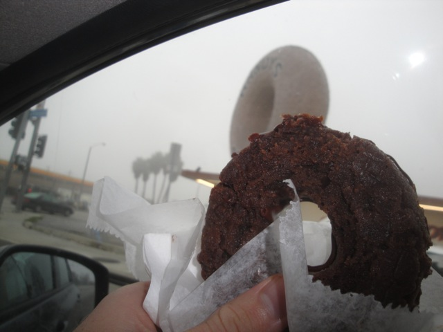
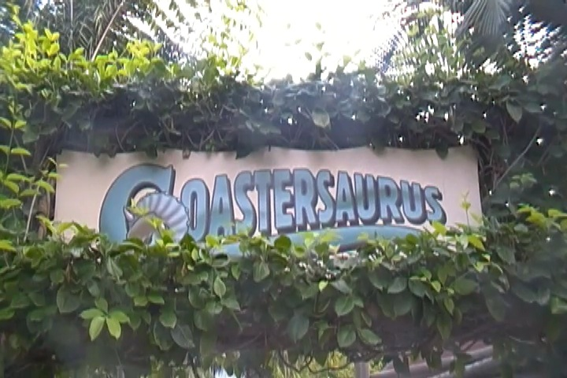
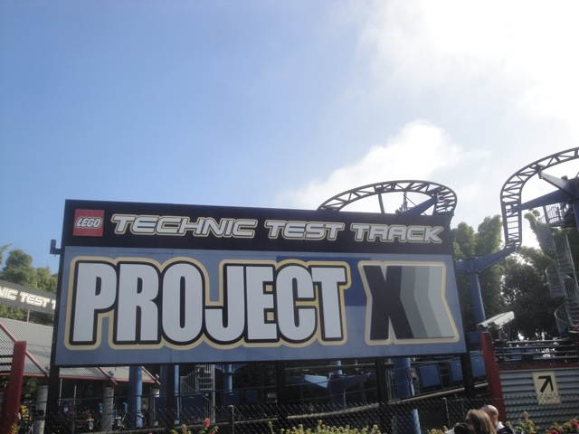
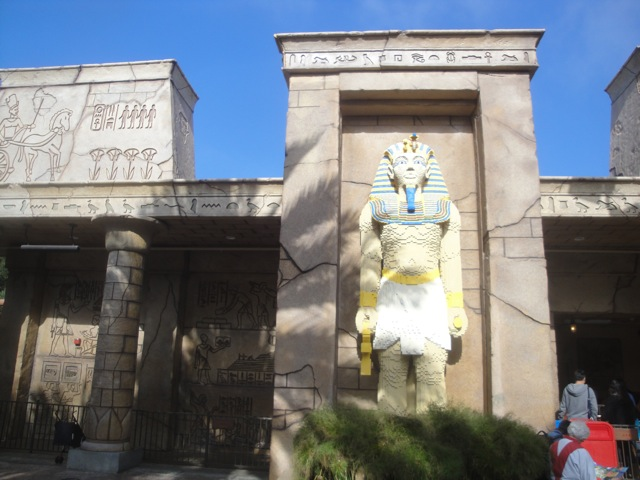
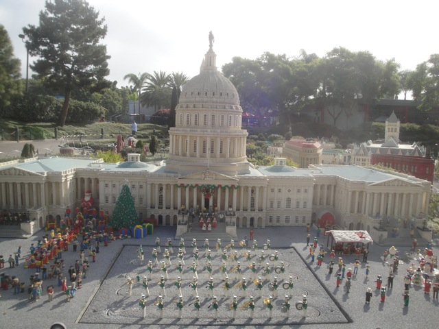
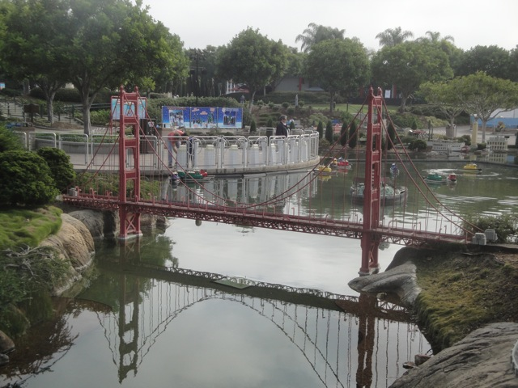
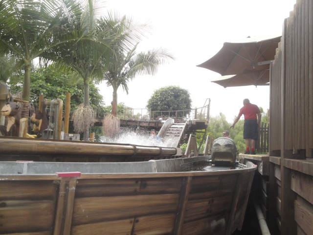

Legoland CA 2012

All right. Its time for another fun Incrediblecoasters Trip. This was a totally unexpected last minute trip as we didn't even think or plan on going to Legoland CA until about a week before it happened. Originally, we were planning on going to Legoland in October with Sea World, but we saw the ticket prices and said "F*ck that!!!" We were originally just planning on post-poning it to 2013 so I could check it out since I hadn't been here in 12 years and there were two credits for me to get. But then Cody entered the Employee Raffle and won 4 tickets to Legoland. YAY!!!! Now we can go this year and not worry about it next year!!! Thank you Cody for saving me $60 with that raffle. And just like last time, we stopped at Randys for breakfast.
 Oh boy!!! Time to go the magical land of Legos!!!
Oh boy!!! Time to go the magical land of Legos!!!
"Open the bathroom doors!!! I gotta take a Lego piss!!! Ugh!!! Why did I drink all that Lego Coke!!!?"

First off, I went straight to Coastersaurus to get the credit since I heard that it gets long lines later in the day.
The good news I didn't have to worry about timing since Legoland was dead today!!! =) So I would've gotten on this no problem today no matter when I went. The bad news is that Coastersaurus is a crappy kiddy coaster.
DAMMIT CODY!!! STOP HOLDING UP EVERYONE BEHIND YOU AND KEEP PEDALING!!!!
I loved this thing where you pull yourself up to the top!! Can we please make Lex Luthor like this? =)
 Up next, the Dragon (No, not that horrible coaster from Iowa, this is a much better ride).
Up next, the Dragon (No, not that horrible coaster from Iowa, this is a much better ride).
Well maybe he'd still be alive if he wasn't so fat.
Its basically a Vekoma Roller Skater with a cool Lego-Dark Ride section before.
 Now I already had this credit from when I went to Legoland WAY BACK in 2000 when I was 8. But hey, its fun.
Now I already had this credit from when I went to Legoland WAY BACK in 2000 when I was 8. But hey, its fun.
And now its time for us to ride the star attraction of the park, Knights Tournament.
When you ride this thing on Level 5, it is truely insane. You get flung around everywhere and are spinning upsidedown with crazy forces. It's kind of like pre-neutered Green Lantern.
This thing totally makes it on our Top 10 Flat Rides List.

All right. Time to get the final credit of the park. Technic Coaster.
Technic Coaster is one of those wild mice with the big drop first. And yeah. They're fun rides and for this type of park, a perfect fit.

To make this place even cooler, they have a shooting dark ride here.
Its got a good story, and its actually hard to get a good score. Apparently, I hit the special target cause I my score is nearly four times as much as everyone elses!!! Two thumbs up from Incrediblecoasters. =)
Hey look. They have a teacup ride. Lets get it going like this.
NOT AMUSED ABOUT THE SPINNING!!!
This is awesome for two different reasons. First off, its a water whip. I really liked the one at Movie Park Germany, so I'm glad to be riding another one. And second of all, FREE WATER CANNONS!!!!!! =)
"DIE!!!!!!"
"Ugh. Now all my stuff is wet. Dammit Kevin!!!"
All right. Time to check out Miniland.
"And on your left, you'll see the raising of the flag at Iwo Jima. I'd like to remind you now that the tip envelope is coming around and that the average tip is of 20 earthos. Thank you for choosing your vacation with Tim's Time Tours and have a great rest of your vacation."
"GRR!!! MUST DESTROY LEGO CONGRESS AND CRUSH LEGO BOEHNER!!!!"

The citizens of D.C thank me for my heroic acts. You're welcome Shawn.
Checking out New Orleans in Miniland.
Don't forget to eat the lego pizza on Lego Scott's Pizza Tours.

All right. Up next in Mini-Land, San Francisco.
There are the Lego Seals from Fishermans Wharf. Now please tell me that you'll see our lego selves at this site we were at last month.
Sorry Alisa. The Lego-Carousel at Fishermans Wharf, much like the real one, is also closed.
Why can't all versions of Santa be this awesome with him bullriding?
 I decided to check out their Splash Battle. Not smart on a day like today. Oh, and just as I suspected. Not NEARLY as good as the one at Silver Dollar City.
I decided to check out their Splash Battle. Not smart on a day like today. Oh, and just as I suspected. Not NEARLY as good as the one at Silver Dollar City.

BEST LOG FLUME EVER!!!!!
If you have diarrhea, please do not enter the pool.
 Read the caption above.
Read the caption above.
"Blugh. Take him back. He tastes like Mountain Dew and Craziness."
Legoland clearly isn't that bright considering they're letting us learn how to drive boats.
But then again, what do you expect from a place that hires this guy as a lifeguard? =)
 "Won't be long now till some asshole with sea rage screams at me, flips me off, and throws Powerade at me."
"Won't be long now till some asshole with sea rage screams at me, flips me off, and throws Powerade at me."
Nothing to see here folks. Just bathing with my fish.
"Hey baby. You wanna fondle my legos tonight?"
Its official. Legos have better taste in music than humans. I mean, I'd much rather hear Plastallica than all the horrible people popular today.
 Holy Crap!!! I didn't think any place on the West Coast had Nathans Hot Dogs!!!! =)
Holy Crap!!! I didn't think any place on the West Coast had Nathans Hot Dogs!!!! =)
We ended up eating here instead. It was fine. But I think next time, we should settle for Nathans.
Much to Cody's dissapointment, they aren't tearing down Lego Vegas.
"Hey man!!! Can't you let a poor lego-man poop in peace!!?"
With great power comes great earwax that becomes a real pain in the ass to clean out.
LEVEL 5 KNIGHTS TOURNAMENT MARATHON!!!!! =)
I think another ride on Technic Coaster is in order before we head on out.
JELLY DOUGHNUT!!!!!
 That was our time at Legoland. I must say, I was impressed. If it weren't for the insanely expensive ticket prices, I would totally be back next year. But I'm super-glad I went today.
That was our time at Legoland. I must say, I was impressed. If it weren't for the insanely expensive ticket prices, I would totally be back next year. But I'm super-glad I went today.
Now its time for us to head off to Belmont Park, and more good news. It was much better this time than it was back in October.
Control Freak was open this time, but we still didn't ride.
But since their Brain Surge clone was open, we did ride it. These flat rides are incredible!!! Why aren't more parks building them!!! Its amazing in Minnesota and its amazing here!!!! =)
And of course, we had to take a ride on the Giant Dipper while we're here.
Hello there 1920s Giant Dipper Car.
Some please explain to me what the hell that flat ride is and why its not at Belmont Park today.
All right. Story Time. Our original plan was after Legoland, head over to Belmont Park, and then hit up the Carousel at Balboa Park. Well the 5 was especially crowded tonight. At first, I just chalked it up to it being Friday Night at rush hour in a big city like San Diego. But it was bad. Really bad. I had thought there was a big accident as well. But then I saw a sign close to Belmont Park stating that traffic was extra bad due to a special Christmas Event at Balboa Park. Right then, I told Cody to abandon the idea of the carousel at Balboa Park. But he was driving and he insisted that we check this event out. Now normally, I'm all down for exploring random local events at whim. But this was WAY beyond what should've been Maximum Capacity. We were held up on the freeway offramp for 30 minutes all due to traffic. At this point, I was pissed off, telling Cody to turn around and that he wasn't going to find a parking spot and that this event isn't worth this insane wait. But he insisted, stating that if this many people are coming, then it must be really good. I was getting really angry now, telling him to turn around over and over again considering we were wasting our time and gas going around in circles looking for a parking spot that didn't exist in this insane traffic. Over an hour has passed, and I'm really mad. This is WAY beyond my limit. This is like seeing the line for Goliath at Bugs Bunny World, and getting line, saying that it must be fun if this many people are waiting in line for it. I mean, I like Goliath, but I would NEVER wait in that line for it!!!! This was pretty much the equivelant of that. I hate crowds like this, and this event seemed way beyond capacity. I saw the website for this event and read the description, and it sounded fun. But not with these crowds and even without these horrible crowds, it wouldn't be worth this wait!!! Cody finally found parking for $20, and he took it. We're here at this stupid event, and I'm mad as hell. This thing had to have Roger Waters, Weird Al, Andrew W.K, and Les Claypool all performing all while handing out free beer, unlimited rides and drinking games on the carousel, hot women, and a first class ticket to Japan included to make me say that this event was worth the wait.
And this is the event. Essentially, its kind of like a giant flea market meets a carnival. You can buy some cool stuff if you look, but seeing how angry I was, the absolute last thing I wanted to do was blow all my money on a bunch of stuff I don't need. The event was pretty much what I expected, and after about 20 minutes of walking around, we left because this wasn't fun. So yeah. Cody paid $20 for 20 minutes of walking around a giant flea market. An hour of traffic and $20. For a giant flea market. Well, at least now I know when to avoid San Diego. And hey, this fiasco sucked major ass, but Legoland was awesome, and since thats what the day was supposed to be all about, I can call it a total successful day.
Home